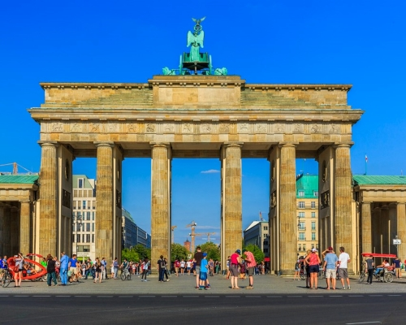
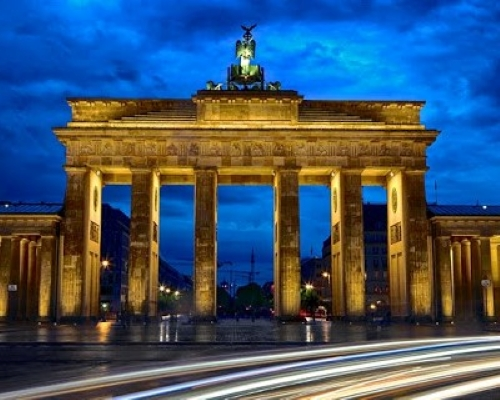
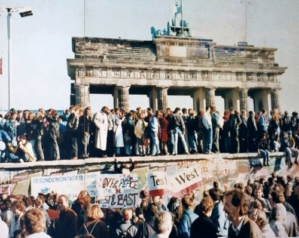
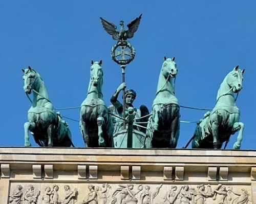

브란덴부르크 문
Brandenburg Gate
- 
- 
- 
- 
주소
정보
꿀팁
교통
운영 시간
입장료
Pariser Platz, 10117 Berlin Germany, 독일
베를린은 물론 독일을 대표하는 랜드마크. 1791년에 세워진 평화의 문이다.
1989년에 동독이 무너지고 베를린 장벽이 철거되자, 브란
덴부르크 문은 자유와 평화를 상징하는 문으로 떠올랐다.
수 천명의 사람들이 1989년 11월 9일에 베를린 장벽 정책
의 붕괴를 축하하기 위해 이 문 앞에 모였고, 1989년
12월 22일에 다시 완전히 열렸다.
사두마차 상은 1806년 나폴레옹에게 대패한 후 프랑스 파
리에 옮겨졌다가 1814년 대승후 다시 독일로 옮겨졌다.
사람이 없을 때 보고 싶다면, 아침시간을 추천함!
Brandenburger Tor역에서 내려서 도보 3분
운터 덴 린덴 끝에 파리저광장과 브란덴부르크 문이 있다.
독일 100번 버스를 타면 다른 베를린 관광지로 이동이 편하다!
지하철, 버스
상시
무료